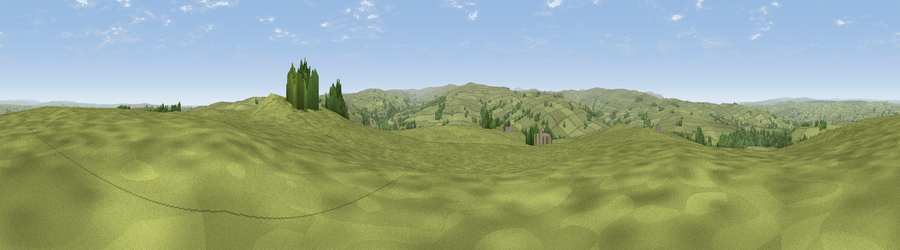

Viewpoint near Catton
#11582 in England · top 28% of its area beats it · near CattonWhere it is
The exact computed spot (NY 81925 59375). Click the marker for map links.
The view, rendered

A 360° render of this exact spot computed from the terrain model, tree cover and land cover — summer colours, afternoon light, calibrated against photographs of famous viewpoints. Real trees, hedges and buildings will differ in detail.
The panorama
Grey silhouette: terrain skyline in each direction (720 bearings, Earth curvature and refraction included). Dashed green: skyline with trees (+15 m) and buildings (+8 m) as obstacles. Blue strip: how far the ground is visible on each bearing.
Where the view opens
Wedge length = distance to the farthest visible ground on that bearing (vegetation-aware). Rings at 10, 25 and 50 km.
What fills the view
92% grassland · 8% woodland
Angular shares of the visible panorama (visual magnitude), not map area. Landscape diversity 0.13 (0–1 Shannon).
Key numbers
More beautiful places nearby
The staircase of upgrades: each row has a higher view potential than everything closer. Driving times are estimates from straight-line distance, calibrated against real road routing — check an actual route before setting out.
| Place | Direction | Drive | Score |
|---|---|---|---|
| Catton Beacon | ESE · 0 km | ~1 min | 64.6 |
| Viewpoint near Catton | SW · 4 km | ~10 min | 66.0 |
| Viewpoint near Allendale | SSW · 6 km | ~12 min | 68.1 |
| Viewpoint near Allendale | S · 7 km | ~15 min | 70.0 |
| Hotbank Crags | NNW · 10 km | ~19 min | 70.4 |
| Viewpoint near Bardon Mill | N · 11 km | ~21 min | 71.0 |
| Viewpoint near Fourstones | NE · 12 km | ~22 min | 71.4 |
| Viewpoint near Allenheads | S · 15 km | ~26 min | 74.6 |
54.92873, -2.28358 · source: screening · position refined by local search. Computed location — check access rights before visiting.